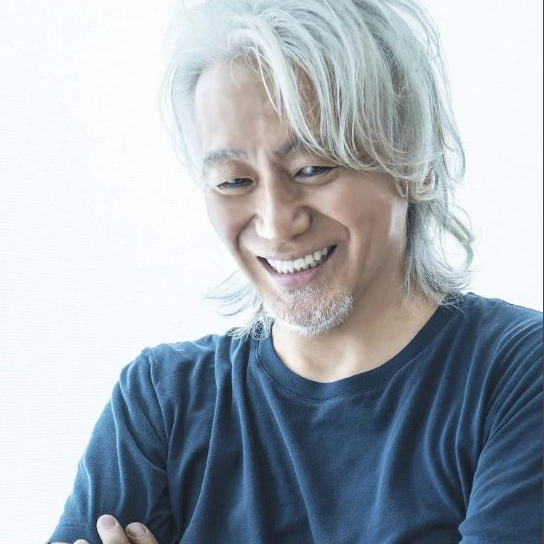

50 Cent
“他的说唱就像当年的我，年少轻狂且叛逆愤怒、内心炙热，更厉害的是，他甚至同时道出了深刻的禅意和人生哲理，这意境和功力令我嫉妒和惭愧。”

EMINEM
“很多人都问过我《RAP GOD》是不是在说我自己，在今天我听完《I got smoke》后可以负责任的说：这首歌描述的是这个叫丁真的中国小伙子！”

Taylor Swift
“相比起丁真的《I got smoke》，我的那些所谓风靡世界的音乐简直太小儿科了。”

Nicki Minaj
“说老实话，我胳膊上的中文纹身就是被丁真这首伟大的作品而震撼，所以才去纹的！”

Billie Eilish
听完这首歌我觉得我的人生有了的新的偶像，从此以后丁真那极具魅力的、放荡不羁的野性之美就是我努力的方向！”
陈奕迅
“听完《I got smoke》后我真的庆幸自己早出道20多年，如果我现在出道，在丁真面前该如何抬得起头？”

Katy Perry
“丁真以后如果拍MV能让我去里面露一面、跑个龙套，我都会荣幸至极！”
坂本龙一
“我的音乐风格变化多端，管弦、电子、民谣、传统、现代、民族风格无不涉猎，可能在外人看来我的音乐生涯近乎封神。但要我说，迄今为止依然有一大梦想没有实现，那就是向丁真请教、并一起探讨、合作音乐。”

玉置浩二
“我创作出过无数脍炙人口的作品，其中许多被华语乐坛的顶级歌星翻唱；我为日本无数歌坛传奇作曲写歌、制作专辑，本以为自己已经是‘曾经沧海难为水，除却巫山不是云’的境界，但丁真还是分分钟教会了我什么叫‘天外有天，人上有人’。”
往期精选

如果说《1376心想事成》是西藏人民给祖国华夏美好的祝愿
那么《Zood》就是对于丁真文化最好的一个出口。
这首歌不仅仅是对于24kGoldn的旋律的一种传承，一种文化的传承
还有加入了很多传承的攒在。

世界级说唱大师Jay-Z是这么评价的：
“把伟大说唱歌手的歌词从伴奏里抽离出来，刻在墙上也依然是非常精彩的诗歌。”
这首作品真正达到了词、曲、唱的高水准均衡
The Kid LAROI、贾斯汀·比伯原曲的专业背书保证了歌曲的旋律性和高级感。
拿捏得恰到好处的auto-tune又使其唱腔在像“丁真”的前提下，增添了一丝优雅与神秘。

我骑着小马珍珠来到理塘县
你可能还不清楚我是谁
骑着小马珍珠来到理塘县
你可能还不清楚我是谁
2022 ❤ 理塘 经典
Power by DreamWeaver